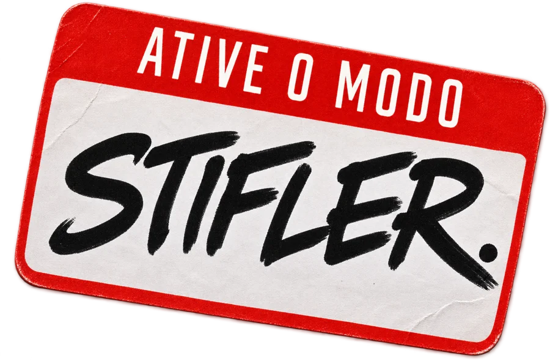

É sempre o “amigo legal”
Para quem é educado, gente boa, ajuda todo mundo e mesmo assim nunca é a escolha dela.
O manual da Social Pro com Maxwell Schlomer sobre a mentalidade, a presença e a atitude do cara que ela não esquece.
100% gratuito • Acesso imediato • Conteúdo +18
PARA QUEM É
Para quem é educado, gente boa, ajuda todo mundo e mesmo assim nunca é a escolha dela.
Para quem vê a mulher que quer, ensaia o que vai falar e deixa a oportunidade passar.
Para quem mede cada palavra, responde rápido demais e se preocupa com o que os outros vão achar.
Para quem não entende por que alguns homens comuns atraem as mulheres mais interessantes do lugar.
Para quem sente que precisa se encolher para caber no mundo moderno e quer recuperar a própria confiança.
O QUE VOCÊ RECEBE

Seleção primitiva e as vantagens competitivas que separam o cafa dos homens “comuns”.
Como pensa, como se veste e como age um cafa. E o que é ter presença de verdade.
A escalada na prática, do primeiro contato visual até o momento do beijo.
Um exercício para se encontrar na vida e como ser cafajeste sem ser uma má pessoa.
VIDA REAL
O que está no e-book é o que o Max vive nas festas, nas viagens e nas noites com a Social Pro.
QUEM É
Maxwell Schlomer é o nome à frente da Social Pro, uma comunidade de caras que ajudam outros caras a se transformar, um de cada vez.
Ele ensina inteligência social e sedução sem filtro: o que realmente funciona no mundo real, testado nas festas, nas viagens e nos eventos da Social Pro Academy.
O diferencial? Nada de fórmula decorada. O Max te ensina a ser natural, leve e confiante. Aquele cara protetor e divertido que joga o jogo rindo.
ACESSO GRATUITO
Você já está competindo, queira ou não. A diferença é jogar sabendo as regras.
100% gratuito • Acesso imediato • Conteúdo +18
E-BOOK GRATUITO
Preencha seus dados e o download libera na hora.